q01 · source D · new B
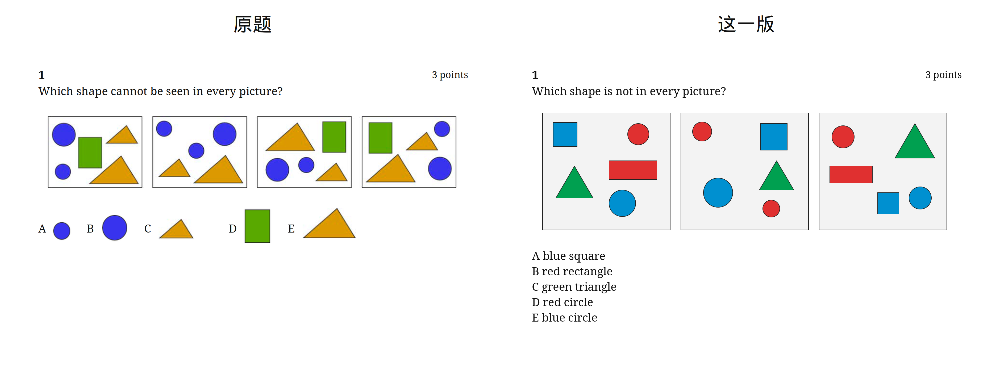
q02 · source C · new E
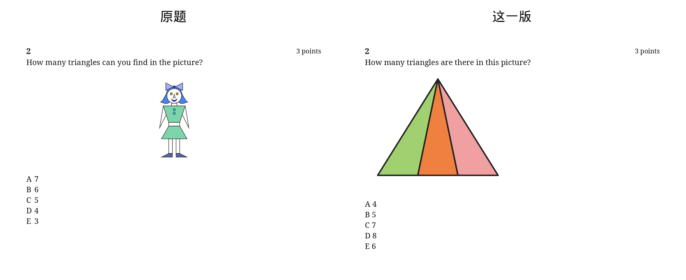
q03 · source E · new C
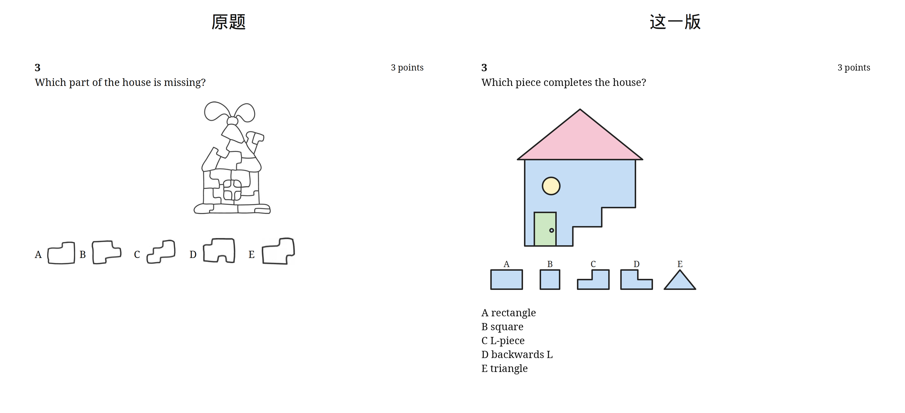
q04 · source C · new D
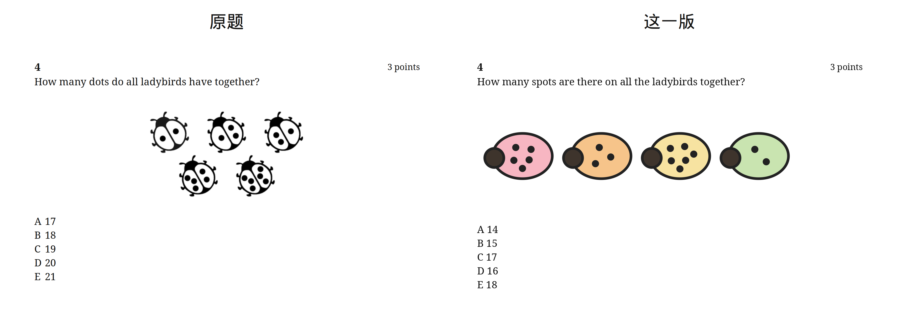
q05 · source B · new C
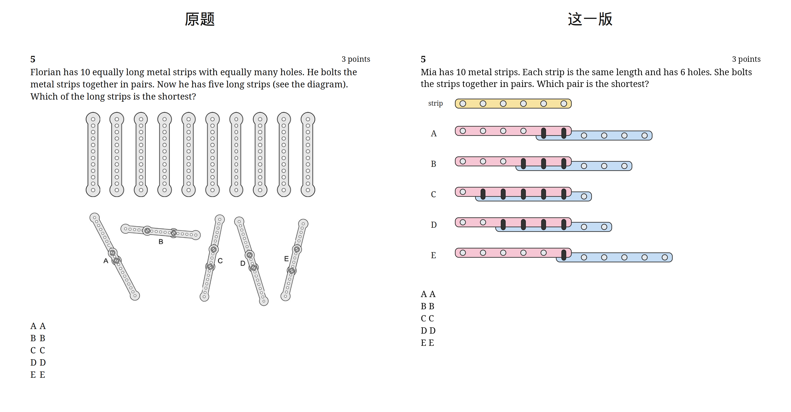
q06 · source E · new B
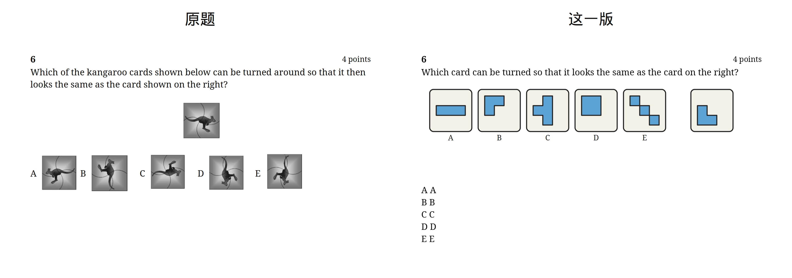
q07 · source A · new B
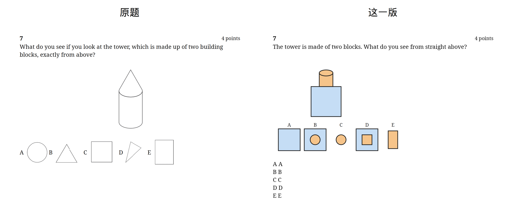
q08 · source E · new D
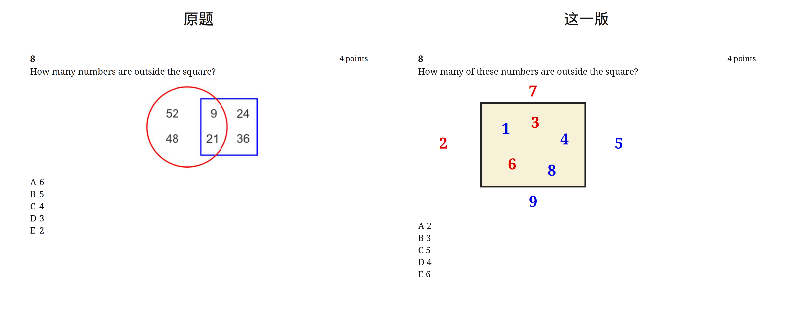
q09 · source D · new C
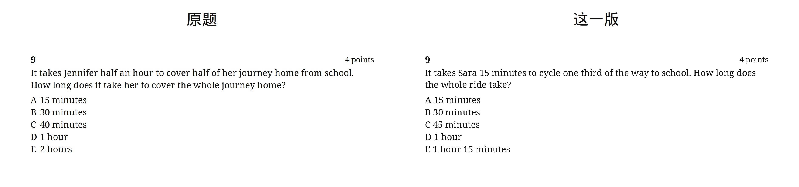
q10 · source B · new C
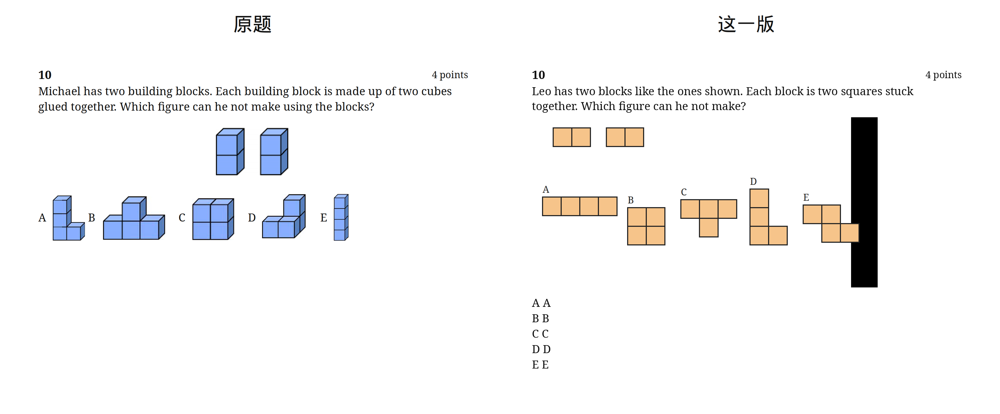
q11 · source C · new B
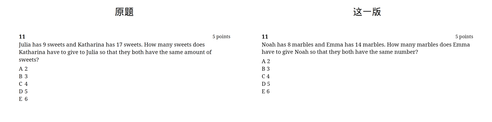
q12 · source C · new D
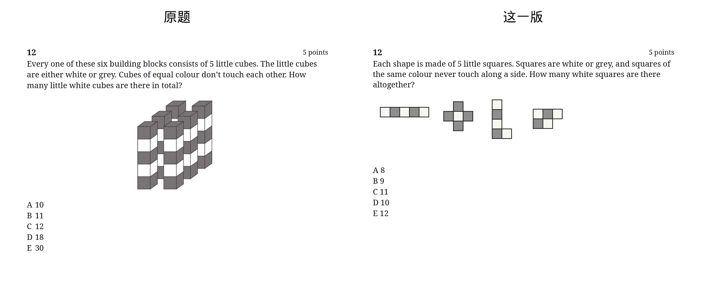
q13 · source A · new B
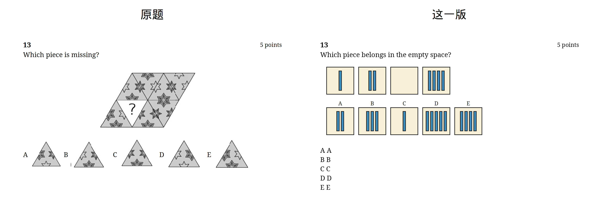
q14 · source D · new C
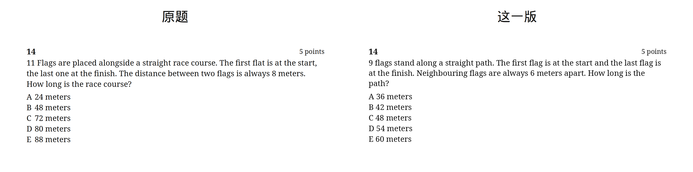
q15 · source B · new D
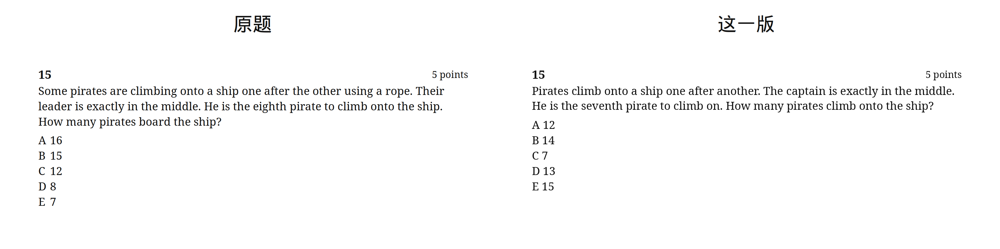